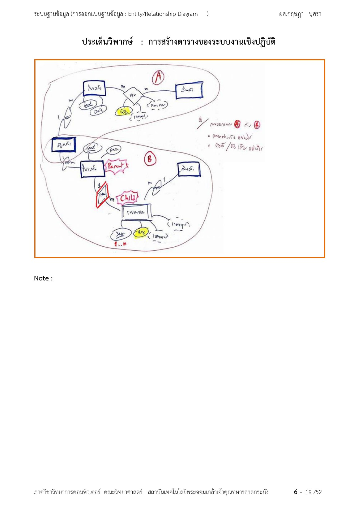
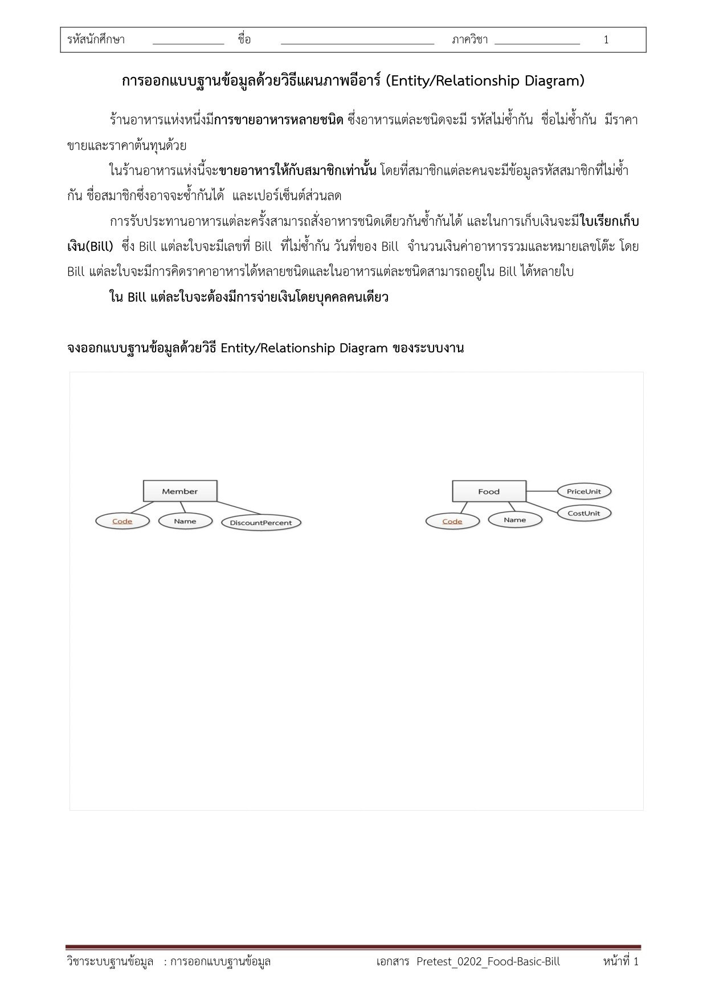

หน้าแรก / วิพากษ์ Data Model
⚖️ การวิพากษ์แบบจำลองข้อมูล (Data Model Critique)
หลักการ 2 ข้อที่ต้องจำก่อนตอบทุกข้อ
🚫 No Silver Bullet
ไม่มี Data Model ใด "ดีที่สุด" ในทุกสถานการณ์ — การออกแบบที่ดีต้องดูจากบริบทธุรกิจจริง (Business Domain) และกระบวนการทำงาน (Business Process)
≠ ความไม่เท่ากัน
โมเดลของระบบงานแต่ละประเภทแทนกันไม่ได้โดยตรง เพราะการไหลของข้อมูล (Information Flow) และข้อจำกัดธุรกิจ (Business Constraints) ต่างกันสิ้นเชิง
⚠️ กฎเหล็กของข้อสอบวิพากษ์
ห้ามสรุปว่าโมเดลไหน "ถูก" หรือ "ผิด" — ต้องตอบว่าโมเดลเหมาะ/ไม่เหมาะกับบริบทใด และทำไมจึงแทนกันไม่ได้ (เอาโมเดลง่ายไปใช้กับงานซับซ้อน = ขาดโครงสร้าง เอาโมเดลซับซ้อนไปใช้กับงานง่าย = Over-engineering)
โมเดลที่ 1: Bill-Centric (ร้านอาหารหน้าร้าน / POS คิดเงินทันที)
flowchart LR
CUS["CUSTOMERS"] ---|1| HB{"มีบิล"}
HB ---|N| BIL["BILLS"]
BIL ---|1| IT{"มีรายการ"}
IT ---|N| ITM["BILL_ITEMS"]
ITM ---|N| MI{"อ้างถึง"}
MI ---|1| MENU["MENU_ITEMS"]
BIL ---|1| PAY{"ชำระเงิน"}
PAY ---|N| PMT["PAYMENTS"]
ภาพที่ 1 (Chen Model): Bill-Centric — ทุกอย่างหมุนรอบ "บิล" สั่งและจ่ายพร้อมกัน
✅ จุดเด่น
โครงสร้างกะทัดรัด ซับซ้อนต่ำ Query ปิดยอดขายรายวันง่าย — เหมาะกับ POS หน้าร้าน ร้านอาหารทั่วไป (สั่ง = จ่าย เกิดใกล้เคียงกัน ไม่ต้องแยก "ออเดอร์" ออกจาก "บิล")
❌ ข้อจำกัด
ไม่รองรับการจัดส่ง (Fulfillment/Shipment), ไม่รองรับแบ่งจ่าย/แบ่งบิล, ไม่รองรับการสั่งล่วงหน้า
โมเดลที่ 2: Order-Centric (สั่งจองล่วงหน้า / สั่งผลิต)
flowchart LR
CUS["CUSTOMERS"] ---|1| PL{"สั่งซื้อ"}
PL ---|N| ORD["ORDERS"]
ORD ---|1| OI{"มีรายการ"}
OI ---|N| OIT["ORDER_ITEMS"]
OIT ---|N| MI{"อ้างถึง"}
MI ---|1| MENU["MENU_ITEMS"]
ORD ---|1| PP{"จ่ายเข้าออเดอร์"}
PP ---|N| PMT["PAYMENTS"]
ภาพที่ 2 (Chen Model): Order-Centric — เน้นบันทึก "เจตนาซื้อ" ก่อน จ่ายเข้าออเดอร์ตรง ๆ รองรับสถานะรอดำเนินการ
✅ จุดเด่น
เก็บ "เจตนาในการซื้อ" (Customer Intent) ก่อนจ่ายได้ — รองรับสถานะรอดำเนินการ เช่น รอปรุง รอลูกค้ามารับ (ร้านสั่งจอง, POS สั่งทำ)
❌ ข้อจำกัด
รวมศูนย์การเงิน (Billing) กับคำสั่งซื้อ (Order) ไว้จุดเดียว — แยกรอบบิล หรือแยกส่งหลายเที่ยวไม่ได้
โมเดลที่ 3: Enterprise Commerce (อีคอมเมิร์ซเต็มรูปแบบ)
flowchart LR
CUS["CUSTOMERS"] ---|1| PL{"สั่งซื้อ"}
PL ---|N| ORD["ORDERS"]
ORD ---|1| OI{"มีรายการ"}
OI ---|N| OIT["ORDER_ITEMS"]
OIT ---|N| SHI{"ถูกจัดส่ง"}
SHI ---|N| SI["SHIPMENT_ITEMS"]
SI ---|N| SR{"อยู่ในรอบส่ง"}
SR ---|1| SHM["SHIPMENTS"]
ORD ---|1| BB{"เปิดบิล"}
BB ---|N| BIL["BILLS"]
BIL ---|1| PP{"ชำระเงิน"}
PP ---|N| PMT["PAYMENTS"]
ภาพที่ 3 (Chen Model): Enterprise Commerce — แยก 3 แกน: Commercial Intent (Orders) / Financial Flow (Bills+Payments) / Logistics Flow (Shipments) • ORDER_ITEMS (1) → SHIPMENT_ITEMS (N) คือสายส่งที่ทำ Partial Shipment ได้
แกนหลัก 3 เส้นของโมเดลนี้:
- Commercial Intent — ลูกค้าต้องการซื้ออะไร (
ORDERS+ORDER_ITEMS) - Financial Flow — เรียกเก็บเงินเมื่อไร รูปแบบใด ชำระแล้วกี่งวด (
BILLS+PAYMENTS) - Logistics Flow — สินค้าแพ็กส่งรอบไหน ขนส่งรายใด (
SHIPMENTS+SHIPMENT_ITEMS)
📦 Partial Shipment
1 คำสั่งซื้อ ทยอยส่งหลายรอบตามสินค้าเข้าสต็อก (โครงสร้าง SHIPMENT_ITEMS รองรับ)
🧾 Split Billing
แบ่งเปิดบิลหลายใบตามงวด หรือตามรอบที่ส่งของจริง
🔍 Traceability
ตรวจได้ลึกระดับไอเทมว่า ชิ้นไหนส่งแล้ว ชิ้นไหนค้างส่ง
❌ ข้อจำกัดของโมเดลใหญ่
Schema ซับซ้อนสูง ต้อง JOIN หลายตาราง ต้นทุนประมวลผลสูง — เอาไปใช้กับร้านอาหารหน้าร้านธรรมดา = Over-engineering ทำให้ระบบยุ่งเกินจำเป็น
ตารางวิพากษ์เทียบ 3 โมเดล (ท่องตารางนี้ = จบข้อสอบ)
| มิติ | Bill-Centric | Order-Centric | Enterprise Commerce |
|---|---|---|---|
| จุดศูนย์กลาง | BILLS | ORDERS | ORDERS (แยก Billing & Logistics ออก) |
| โลจิสติกส์/การจัดส่ง | ไม่รองรับ (รับของทันที) | ไม่รองรับ | รองรับเต็มรูปแบบ (SHIPMENTS, SHIPMENT_ITEMS) |
| ความยืดหยุ่นการชำระเงิน | จ่ายตามบิลหน้าร้าน | จ่ายตรงเข้าออเดอร์ | แยกบิลได้หลายใบ/หลายงวด |
| ความซับซ้อน | ต่ำมาก | ต่ำ | สูง (สะท้อน Business Reality) |
| บริบทที่เหมาะ | ร้านอาหาร, ร้านค้าปลีกด่วน | ร้านสั่งจอง, POS สั่งทำ | E-Commerce, B2B, คลังสินค้า |
สูตรตอบข้อสอบ "จงวิพากษ์โมเดลนี้" — 3 ขั้นตอน
-
ระบุเจตนาของโจทย์
ชี้ทันทีว่าภาพนี้เป็นการเปรียบเทียบโมเดลหน้าร้านแบบง่าย กับ โมเดลพาณิชย์/โลจิสติกส์ระดับองค์กร — และเครื่องหมาย ≠ หมายถึง แทนกันไม่ได้ ไม่ใช่ "ผิด"
-
อธิบายความหมายของ ≠
โมเดลฝั่งง่าย ใช้แทนฝั่งซับซ้อนไม่ได้ เพราะขาดโครงสร้างรองรับการจัดส่ง (
SHIPMENTS) และการแยกเปิดบิล (BILLS)
และการเอาโมเดลใหญ่ไปใช้กับร้านหน้าร้านธรรมดาก็เกิด Over-engineering — ซับซ้อนเกินความจำเป็น -
ยกสถานการณ์จริง (Concrete Scenario)
ตัวอย่างที่โมเดลง่ายทำไม่ได้: ลูกค้าสั่งสินค้า 5 ชิ้น สต็อกพร้อมส่งมี 3 ชิ้น → ทยอยส่งรอบแรก 3 ชิ้น รอบสองอีก 2 ชิ้น — ต้องใช้โมเดล Enterprise เท่านั้น ผ่าน
ORDER_ITEMS (1) → SHIPMENT_ITEMS (N)จึงจะตามรอบการส่งได้
🧠 โครงคำตอบ 1 ย่อหน้า (จำสั้น ๆ)
"โมเดลนี้เป็นแบบ [Bill/Order/Enterprise]-Centric ซึ่งเหมาะกับบริบท [X] แต่ ไม่สามารถนำไปแทน โมเดล [อีกฝั่ง] ได้ เพราะ [ขาด/มีเกิน] โครงสร้าง SHIPMENTS และ BILLS เช่น กรณี Partial Shipment ลูกค้าสั่ง 5 ส่ง 2 รอบ โมเดลนี้เก็บข้อมูลไม่ได้ — จึงตอบว่า ≠ หมายถึงแทนกันไม่ได้ตามบริบท ไม่ใช่ผิด/ถูก"
🧪 จำลองกระดาษข้อสอบ — เห็นตรงหน้า (เขียนตอบ 10 คะแนน)
ข้อสอบข้อนี้เขียนตอบทั้งหมด ไม่มีตัวเลือกให้เลือก — กระดาษข้อสอบจะให้มา 2 ชิ้นคงที่ แล้วสั่งวิพากษ์:
- บทร้องขอข้อมูล — ย่อหน้าอธิบายธุรกิจ 1-2 ย่อหน้า (เล่าแบบเจ้าของร้านพูดปากเปล่า) โดยมี คำบอกกฎธุรกิจฝังอยู่ในประโยค เช่น ตัวจริงจากข้อสอบของอาจารย์: "ปัจจุบันได้จัดทำแบบเรียกเก็บเงิน (Bill) ซึ่ง Bill แสดงใบรับรองการกระทำและผลลัพธ์ที่ได้จากความต้องการของลูกค้า และในการแสดงและแก้ไขสถานะของงานใน Bill ได้ตามขั้น"
- ภาพ ER โมเดลที่ให้วิพากษ์ — 1 ภาพ หรือคู่ A vs B 2 ภาพ (สไตล์ Chen มือเขียน) — ภาพจริงของอาจารย์อยู่ด้านล่างในหัวข้อนี้
📋 แนวคำสั่งจริงจาก "ประเด็นวิพากษ์" ของอาจารย์
โน้ตมือเขียนบนกระดาษจริง (เรียบเรียง): "โมเดล A กับ B — ต่างกันอย่างไร จะใช้ / ไม่ใช้อย่างไร" และเวอร์ชันโมเดลเดี่ยว: "จงวิพากษ์แบบจำลองข้อมูลที่ให้มาว่า เหมาะสมกับระบบงานดังกล่าวหรือไม่ เพราะเหตุใด" — ไม่ต้องวาด ER ใหม่ ต้องเขียนตอบเป็นย่อหน้าเท่านั้น


กระดาษข้อสอบจำลอง (ข้อ 1 — 10 คะแนน)
📄 โจทย์
ร้านอาหารหน้าร้านแห่ง A ออกแบบฐานข้อมูลไว้ตาม โมเดล A (ภาพที่ 1 ด้านบนของหน้านี้) — ส่วนร้านอาหารตามสั่งที่มีบริการจัดส่งแห่ง B ใช้ โมเดล B (ภาพที่ 3 ด้านบนของหน้านี้)
จงวิพากษ์ว่า โมเดล A กับ B ต่างกันอย่างไร และแต่ละโมเดลควรใช้ / ไม่ควรใช้กับงานแบบใด
ดูคำตอบตัวอย่างที่ได้คะแนนเต็ม (~12-15 บรรทัดพอดี)
ย่อหน้า 1 — จุดศูนย์กลางของโมเดล: โมเดล A มีจุดศูนย์กลางที่ Bill (ทุกเหตุการณ์ห้อยท้ายจากบิล) เหมาะกับร้านที่ สั่งและจ่ายเกิดพร้อมกัน เพราะเหตุการณ์ทั้งหมดถูกห่ออยู่ในบิลใบเดียว เช่น ลูกค้าสั่งข้าวมันไก่ 2 จาน น้ำ 1 แก้ว = บิล B1001 พร้อมรายการ 2 แถวใน BILL_ITEMS — query ปิดยอดขายรายวันง่าย
ย่อหน้า 2 — วิพากษ์จากบริบทธุรกิจ: โมเดล B แยกใบสั่ง (Order) ออกจากการชำระเงิน (Bill/Payment) และมีการส่งของ (Shipment) รองรับเหตุการณ์ที่เกิด "ไม่พร้อมกัน" เช่น สั่ง 5 ชิ้น แต่สต็อกพร้อมส่งมี 3 ชิ้น ต้องส่งหลายรอบต่อ 1 คำสั่งซื้อ — โมเดล B เก็บได้เพราะมี SHIPMENT_ITEMS แยกรอบ แต่โมเดล A เก็บไม่ได้ เพราะใน Bill ไม่มีเอนทิตีใดอ้างถึงรอบการส่ง (ขาดโครงสร้าง)
ย่อหน้า 3 — ปิดท้ายให้ถูกหลัก: ทั้งสองโมเดลไม่มีใครถูก/ผิด — แต่แทนกันไม่ได้ เอา A ไปทำร้านจัดส่ง = ข้อมูลการส่งเก็บไม่ได้ทั้งหมด เอา B ไปทำร้านหน้าร้าน = ซับซ้อนเกินจำเป็น (Over-engineering) การเลือกจึงขึ้นกับกระบวนการธุรกิจ ไม่ใช่ขนาดโมเดล
เกณฑ์ให้คะแนน 10 เต็ม — ตารางตรวจก่อนส่ง
| องค์ประกอบคำตอบ | น้ำหนัก | เช็กลิสต์ตอนเขียน |
|---|---|---|
| ระบุจุดศูนย์กลาง/โครงสร้างของโมเดลที่ให้มา | ~2 | ชี้เอนทิตีหลักให้ชัด (Bill-Centric? Order-Centric?) |
| วิพากษ์เทียบบริบทธุรกิจ | ~3-4 | ต้องมีคำว่า "เหมาะกับ..." + "ไม่รองรับ/ขาด..." พร้อมเหตุผลโครงสร้าง |
| ยกเหตุการณ์จริงเป็นหลักฐาน | ~2-3 | เล่า 1 เหตุการณ์ที่โมเดลรองรับ/ไม่รองรับ (เช่น สั่ง 5 ส่ง 2 รอบ) |
| ปิดท้ายถูกหลัก: ไม่ถูก/ผิด แต่แทนกันไม่ได้ | ~1-2 | ต้องมีประโยคนี้ทุกครั้ง — ขาดคือขัดหลัก No Silver Bullet ที่อาจารย์สอน |
🚨 ข้อผิดพลาดที่หักคะแนนทันที
1) ตอบ "โมเดล B ดีกว่า A" / "A ผิดหลักการ" — ขัดหลักการสอนของอาจารย์ตรง ๆ 2) เขียนวิพากษ์แบบไม่อ้างโครงสร้างตาราง (บอกว่า "ไม่ดี" แต่ไม่บอกว่า ขาดเอนทิตีอะไร) — ได้ครึ่งเดียว 3) เขียนเลยตอนยังไม่ได้ไล่แถวข้อมูลทดสอบโมเดล — เหตุผลจะลอย ไม่มีหลักฐาน
ลำดับลงมือตอนสอบ (ใช้เวลาราว 10-12 นาที)
-
ขีดเส้นใต้กฎธุรกิจในโจทย์ (1 นาที)
จับคำว่า "เท่าใดก็ได้ / ไม่จำเป็นต้องมี / หลายครั้ง / เท่านั้น" — ทุกคำนี้คือความสัมพันธ์ 1:N หรือข้อจำกัดที่โมเดลต้องรองรับ เช่น "รับของอาจเกิดขึ้นได้หลายครั้งต่อ 1 ใบสั่งซื้อ" จากโจทย์โรงนาฬิกาจริงของอาจารย์ = ต้องมีตารางรับของแยก ไม่งั้นเก็บไม่ได้
-
ไล่แถวข้อมูลจริงทดสอบโมเดล (2 นาที)
ถามตัวเองว่า "เหตุการณ์ในโจทย์จะเก็บใส่ตารางไหน แถวไหน?" — เช่น ถ้าจะเก็บ "ส่งรอบแรก 3 ชิ้น" ลง BILL_ITEMS ได้แถวไหน? เก็บไม่ได้ = นี่คือจุดวิพากษ์ที่ทำคะแนน
-
เขียนย่อหน้า 4 บล็อก (5-7 นาที)
จุดศูนย์กลาง → เทียบบริบทธุรกิจ → เหตุการณ์จริงเป็นหลักฐาน → ปิดท้าย "แทนกันไม่ได้ ไม่ใช่ถูก/ผิด" ตามเฉลยตัวอย่างด้านบน
-
ทวนตรงเกณฑ์ 4 ข้อ (1 นาที)
อ่านทวนตามตารางเกณฑ์ข้างบนให้ครบทุกแถว — โดยเฉพาะประโยคปิดท้ายห้ามลืม
📝 แนวข้อสอบ + ตัวอย่างคำตอบ
ข้อ 1: ระบบร้านอาหารหน้าร้านทั่วไปควรใช้โมเดลใด เพราะอะไร?
ควรใช้ Bill-Centric Model เพราะกระบวนการสั่งและชำระเงินเกิดพร้อมกัน (POS คิดเงินทันที) ไม่มีความจำเป็นต้องแยกสถานะ "คำสั่งซื้อ" ออกจาก "บิล" โครงสร้างจึงกะทัดรัด ซับซ้อนต่ำ และ Query ปิดยอดขายรายวันง่าย — การใช้ Enterprise Commerce Model แทนจะเป็น Over-engineering สิ้นเปลืองโดยไม่จำเป็น
ข้อ 2: ทำไมภาพเปรียบเทียบโมเดลจึงใส่เครื่องหมาย ≠ ไม่ใช่ < หรือ > ?
เพราะตามหลัก No Silver Bullet ไม่มีโมเดลใดดีกว่าโมเดลใดโดยสัมบูรณ์ — ≠ หมายถึง ไม่สามารถแทนที่กันโดยตรง เนื่องจากการไหลของข้อมูลและข้อจำกัดธุรกิจต่างกัน: โมเดลง่ายขาด SHIPMENTS/BILLS ไปรองรับ E-Commerce ไม่ได้ ส่วนโมเดลใหญ่เอาไปใช้กับร้านหน้าร้านก็ซับซ้อนเกินจำเป็น การเลือกจึงขึ้นกับบริบทธุรกิจ ไม่ใช่เรื่องถูก/ผิด
ข้อ 3: ลูกค้าสั่งของ 5 ชิ้นแต่สต็อกมี 3 ชิ้น ต้องทยอยส่ง 2 รอบ — โมเดลใดรองรับ ผ่านกลไกอะไร?
เฉพาะ Enterprise Commerce Model เท่านั้น — ผ่านความสัมพันธ์
ORDER_ITEMS (1) → SHIPMENT_ITEMS (N) ที่ให้ไอเทมหนึ่งของออเดอร์ถูกแบ่งไปอยู่ใน Shipment ได้หลายรอบ (Partial Shipment)
ทำให้ตรวจสอบได้ (Traceability) ว่าชิ้นใดส่งแล้ว/ค้างส่ง และเปิดบิลตามรอบการส่งจริงได้ (Split Billing) —
Bill-Centric และ Order-Centric ไม่มีเอนทิตี Shipment จึงเก็บข้อมูลการส่งแยกรอบไม่ได้เลย
🎬 ลองทำแบบทดสอบด่วน
Q1โมเดลที่แยก ORDERS / BILLS / SHIPMENTS ออกจากกันอย่างชัดเจน คือโมเดลใด?
เฉลย ข้อ 2 — Enterprise Commerce แยก 3 แกน: Commercial Intent (Orders), Financial Flow (Bills+Payments), Logistics Flow (Shipments)
Q2การเอา Enterprise Commerce Model ไปใช้กับร้านกาแฟหน้าร้านเล็ก ๆ เรียกว่าอะไร?
เฉลย ข้อ 4 — โมเดลใหญ่เกินความจำเป็นสำหรับงานง่าย = Over-engineering ทำให้ซับซ้อน/ต้นทุนสูงโดยไม่จำเป็น
Q3เครื่องหมาย ≠ ระหว่างสองโมเดล ควรตอบข้อสอบว่าหมายความว่าอย่างไร?
เฉลย ข้อ 1 — หลัก No Silver Bullet: แต่ละโมเดลถูกออกแบบตาม Information Flow และ Business Constraints ที่ต่างกัน จึงห้ามสรุปว่าถูก/ผิด แต่ต้องชี้ว่าแทนกันไม่ได้และเพราะอะไร